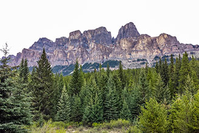
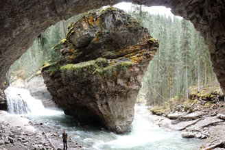
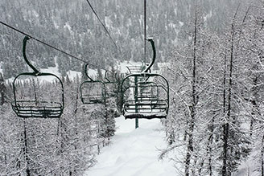

NG Filter
jQuery plugin to filter through a list of images and show only the ones you want.
Live demo
Peyto Lake
Summer

Peyto Lake
Fall
Peyto Lake
Winter

Castle Mountain

Johnston Canyon
Saddleback Pass
Ski jump
Snowpark

Chairlift
Download
Github link Download .zipInstruction
- - Setup HTML so one div (.img_list) surrounds the list of elements you want to filter (.box).
- - Add in the attribute rel="" the elements you want part of the filter list. You can put multiple by seperating them with a ','.
- - Call the NG_Filter(container, init_filter) function from you JS file. You have to send the container (.img_list) and you can send the text of the filter you want selected first.